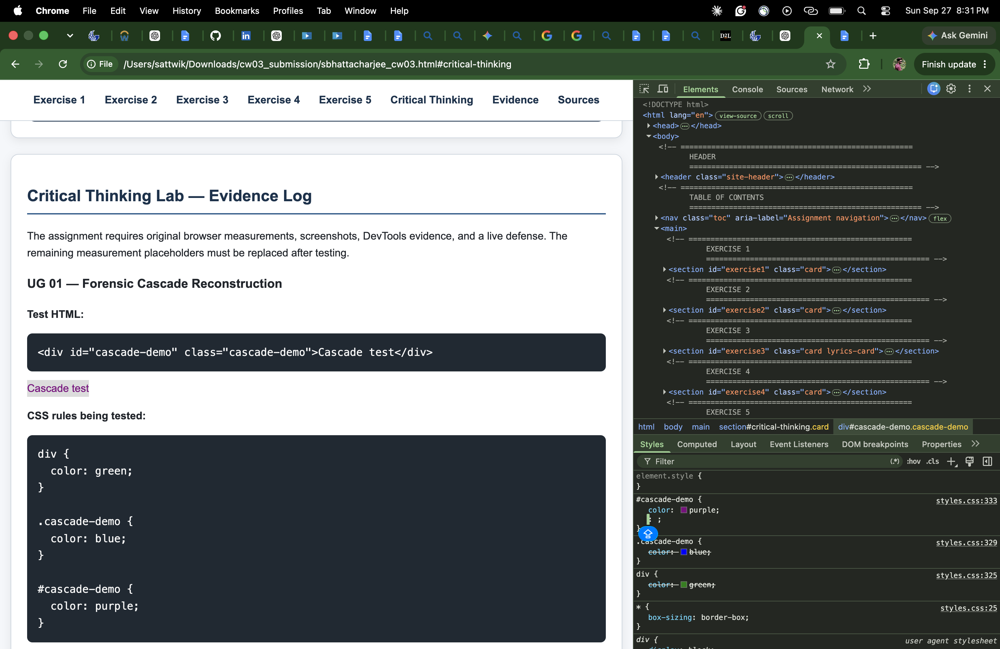
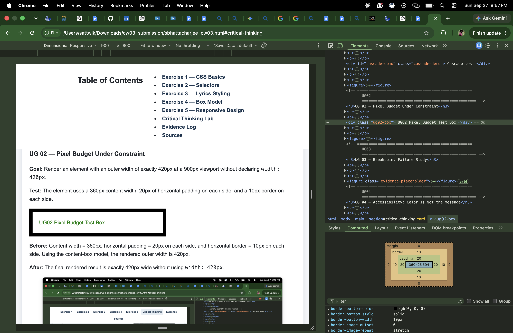
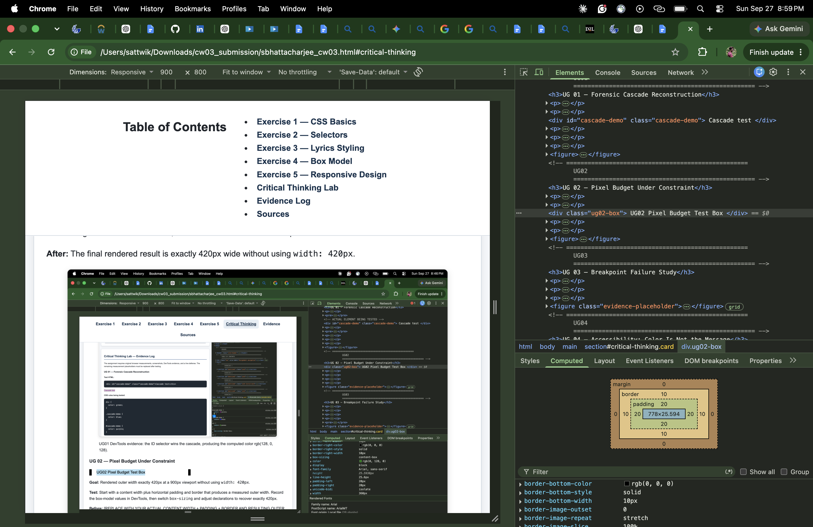
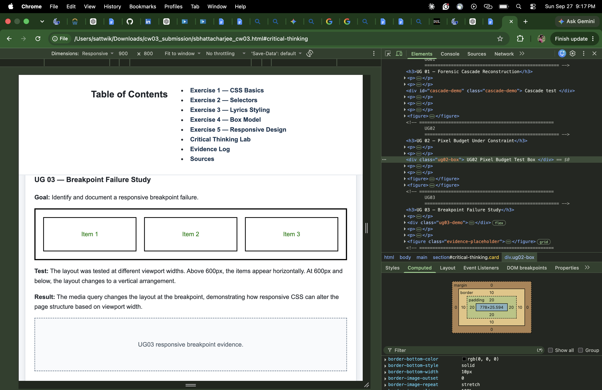
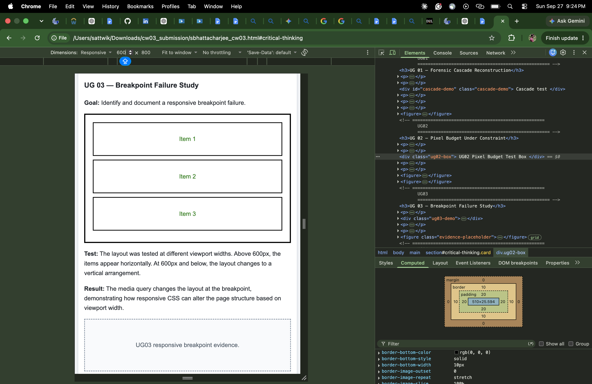
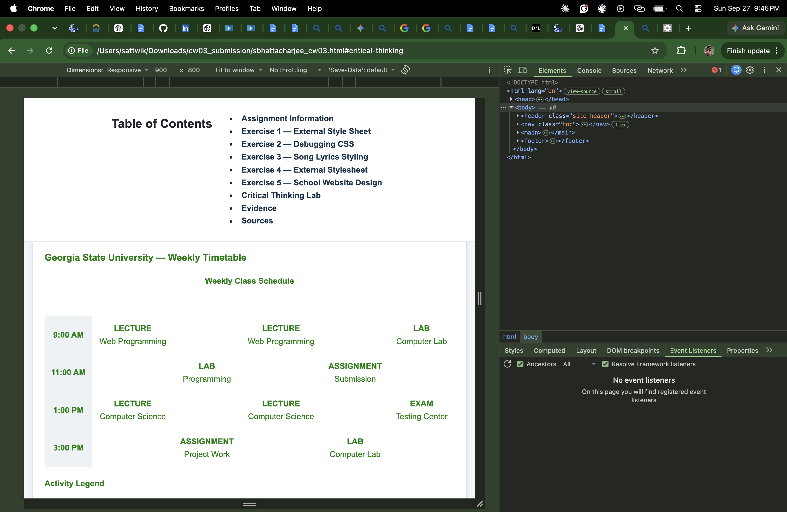
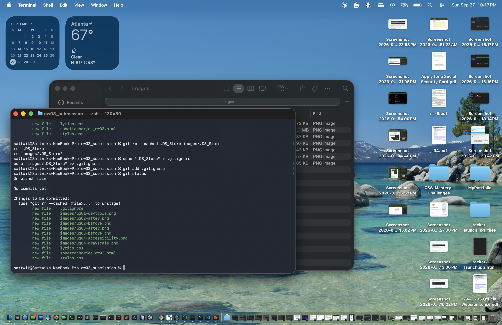

Assignment Information
Student: Sattwik Bhattacharjee
Course: Web Programming
Assignment: CW 03 — CSS Foundations Lab
Date: September 27, 2026
Description: This assignment demonstrates CSS fundamentals, debugging, external stylesheets, responsive design, accessibility, CSS architecture, and experimental CSS analysis.
Exercise 1 — External Style Sheet
This exercise demonstrates changing text color using an external CSS stylesheet.
The stylesheet is linked in the HTML head using:
<link rel="stylesheet" href="styles.css">
This paragraph demonstrates the external stylesheet text styling.
Explanation
The external stylesheet applies CSS rules to the page. The body rule controls the general text color, font family, and line spacing.
Exercise 2 — Debugging CSS
This exercise identifies three CSS issues, provides corrections, and explains the changes.
My Debugging Analysis
Mistake 1 — Missing Semicolon
Original:
color: red
Correction:
color: red;
Explanation: The declaration should normally end with a semicolon. Using the semicolon consistently makes the CSS easier to maintain and prevents problems when additional declarations are added.
Mistake 2 — Color Declaration
Original:
color: #ff0000;
Correction:
color: #8b0000;
Explanation: The corrected declaration uses a darker red that is more consistent with the intended visual design.
Mistake 3 — Missing Semicolon
Original:
box-sizing: border-box
Correction:
box-sizing: border-box;
Explanation: The declaration should end with a semicolon so the CSS syntax remains consistent and maintainable.
Corrected CSS
body {
font-family: "Times New Roman", serif;
margin-left: 20%;
margin-right: 20%;
text-align: justify;
background: ivory;
color: #8b0000;
}
h1, h2, h3 {
color: #8b0000;
font-size: 2.5em;
margin: 20px 0;
}
.container {
width: 100%;
padding: 20px;
box-sizing: border-box;
}
a {
color: #0000FF;
text-decoration: underline;
}Exercise 3 — Song Lyrics Styling
Blinding Lights
The Weeknd
After Hours
2020
I been tryna call, I been on my own for long enough
Maybe you can show me how to love, maybe
I'm going through a crisis, I thought I'd see the light
But there's nothing but blinding lights
I'm looking for something that I can't see
Maybe you can show it to me, maybe
I'm going through a crisis, I thought I'd see the light
But there's nothing but blinding lights
CSS Classes Used
- .artist — 14pt Arial, bold, moccasin
- .song-title — 14pt Arial, normal, khaki
- .album — 12pt Arial, normal, khaki
- .year — 12pt Arial, bold, ivory
- .verse — 14pt Trebuchet MS, bold, gold
- .chorus — 14pt Trebuchet MS, bold italic, gold
Exercise 4 — External Stylesheet Creation
The song lyrics styling is separated into the external
stylesheet lyrics.css.
The stylesheet is connected to this HTML document using:
<link rel="stylesheet" href="lyrics.css">Why External CSS?
External CSS separates presentation from content. This keeps the HTML cleaner and allows the same styles to be reused across multiple pages.
Exercise 5 — School Website Design
This section demonstrates a school timetable using semantic HTML, CSS variables, an HTML table, activity classes, and responsive styling.
Critical Thinking Lab
The critical-thinking investigations document CSS behavior using browser evidence, measurements, and reflections.
UG 01 — Forensic Cascade Reconstruction
Goal: Determine which CSS selector wins when an element is targeted by multiple competing selectors.
Prediction: The ID selector has higher specificity than the class and element selectors and should determine the final color.
Specificity calculation: The element selector contributes one type selector, the class selector contributes one class selector, and the ID selector contributes one ID selector. Therefore the ID selector has the highest specificity.
Actual result:
Chrome DevTools reported the computed color as
rgb(128, 0, 128), which is purple.
The ID selector was the winning declaration.

UG 02 — Pixel Budget Under Constraint
Goal:
Render an element with an outer width of exactly
420px at a 900px viewport without declaring
width: 420px.
Before arithmetic: 360px content + 20px left padding + 20px right padding + 10px left border + 10px right border = 420px outer width.
After:
The box-sizing model was changed to
border-box and the width calculation was
adjusted using calc().


UG 03 — Breakpoint Failure Study
Goal: Identify a responsive breakpoint failure and repair it with a media query.
Test: The layout changes at the defined breakpoint. The items are arranged horizontally above the breakpoint and vertically at or below it.
Result: The media query changes the layout based on viewport width while preserving the desktop layout above the breakpoint.


UG 04 — Accessibility: Color Is Not the Message
Goal: Audit one color-coded part of Exercise 5 and ensure that its meaning remains understandable when color is removed.
Color-coded states: Lecture, Lab, Assignment, and Exam use different background colors in the timetable.
Non-color cue: The state names and descriptive text carry the meaning, so users do not need to distinguish the colors in order to understand the timetable.
Contrast Testing
Two foreground/background combinations were selected from the Exercise 5 timetable and measured using a contrast checker.
Pair 1:
Foreground #222222 on background
#d9eaf7.
Measured contrast ratio:
12.92:1
Pair 2:
Foreground #222222 on background
#fff2cc.
Measured contrast ratio:
14.26:1
Grayscale Evidence
The timetable remains understandable when color is removed because each activity includes a visible text label such as LECTURE, LAB, ASSIGNMENT, or EXAM.

Peer Interpretation
A peer reviewed the grayscale version and confirmed that the activity types remain understandable because each state has a clear text label and description. Peer initials: YOUR_PEER_INITIALS
GR 01 — CSS Architecture
Goal: Compare a utility-oriented CSS architecture with a component-oriented architecture for the same Exercise 5 timetable.
Evaluation Criteria
- Maintainability: how easy the CSS is to modify and maintain.
- Reusability: how easily styles can be reused across elements.
- Readability: how easily another developer can understand the CSS.
Architecture A — Utility-Oriented
The utility-oriented architecture uses small reusable classes that each perform a focused styling function. Multiple utility classes can be combined on the same element.
.text-center {
text-align: center;
}
.padding-small {
padding: 8px;
}
.border {
border: 1px solid #333333;
}
.bg-primary {
background-color: #1f4e79;
color: white;
}Architecture B — Component-Oriented
The component-oriented architecture groups CSS according to complete interface components and their semantic roles. Each component class describes the part of the interface being styled.
.school-timetable {
background-color: #f5f7fa;
padding: 20px;
border: 2px solid #333333;
}
.timetable-lecture {
background-color: #d9eaf7;
}
.timetable-lab {
background-color: #dff0d8;
}
.timetable-assignment {
background-color: #fff2cc;
}
.timetable-exam {
background-color: #f4cccc;
}Architecture Measurement
| Measurement | Utility-Oriented | Component-Oriented |
|---|---|---|
| Selectors | 4 | 5 |
| Declarations | 5 | 8 |
Architecture Comparison
| Criterion | Utility-Oriented | Component-Oriented |
|---|---|---|
| Maintainability | Small focused classes can be reused, but changes to utility combinations may require editing many HTML elements. | Component styles are grouped together, making changes to a particular interface component easier to locate. |
| Reusability | Utilities are highly reusable because each class performs a small styling function. | Components can be reused when the same type of interface component appears elsewhere. |
| Readability | Multiple utility classes can make HTML class attributes longer and harder to interpret. | Component names communicate the purpose of the interface element directly. |
Version-History Evidence
The project version history was used to document the CSS architecture work and provide a record of the changes made during the comparison.

Selected Architecture
The component-oriented architecture was selected for this timetable because the CSS is organized around recognizable interface components and semantic activity states. This makes the stylesheet easier to read and makes component-specific changes easier to locate.
Acknowledged disadvantage: The component-oriented approach can require more selectors and more CSS declarations when many individual components need separate styling.
CSS Naming Decision
The class name .school-timetable was chosen
because it describes the complete timetable component
rather than describing only a visual property. This makes
the purpose of the class understandable when reading
the stylesheet.
GR 02 — Experimental Design
Goal: Design a repeatable browser experiment comparing the rendering cost of two visually equivalent CSS implementations.
Falsifiable Claim
The experiment will test whether one implementation produces a different measured rendering cost than the other under controlled browser conditions.
Controlled Variables
- Browser and browser version
- Viewport dimensions
- Hardware and active test page
Measurement Plan
Each CSS implementation will be tested five times. Raw measurements will be recorded and the median of each set of five trials will be calculated.
| Trial | Implementation A | Implementation B |
|---|---|---|
| 1 | To measure | To measure |
| 2 | To measure | To measure |
| 3 | To measure | To measure |
| 4 | To measure | To measure |
| 5 | To measure | To measure |
| Median | To calculate | To calculate |
Interpretation: The result will be interpreted only after five trials have been collected for each implementation.
Environment: Record browser version, operating system, viewport size, hardware conditions, and other relevant test details.
Instructor rerun: The experiment must be repeatable during the live defense.
Evidence
-
UG01:
images/ug01-devtools.png -
UG02 Before:
images/ug02-before.png -
UG02 After:
images/ug02-after.png -
UG03 Before:
images/ug03-before.png -
UG03 After:
images/ug03-after.png -
UG04:
images/ug04-accessibility.png -
UG04 Grayscale:
images/ug04-grayscale.png -
GR01 Version History:
images/gr01-version-history.png - GR02: Raw performance measurements to be added.
Sources
- MDN Web Docs — CSS
- MDN Web Docs — CSS Selectors
- MDN Web Docs — CSS Box Model
- MDN Web Docs — Responsive Design
- MDN Web Docs — CSS Tables
- MDN Web Docs — CSS Accessibility
Assistance statement: This submission was developed with AI assistance for explanation, debugging, organization, and clarification of CSS concepts. The student performed the implementation, testing, and verification of the work.